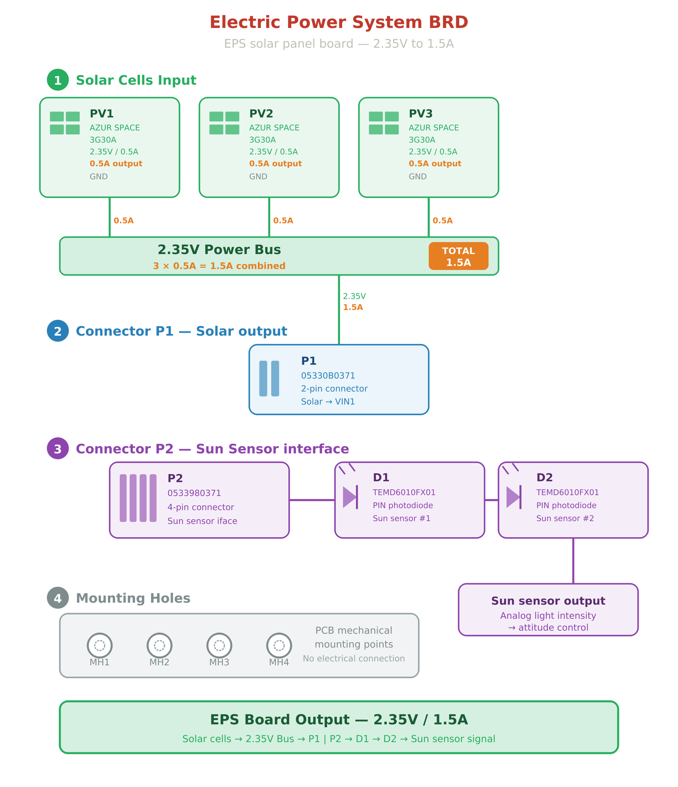
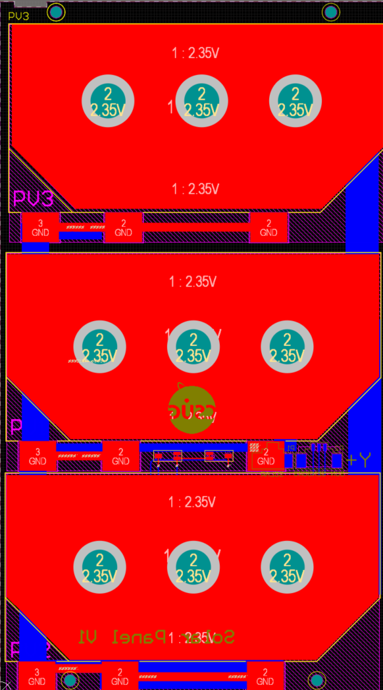
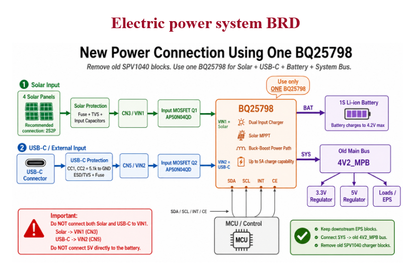
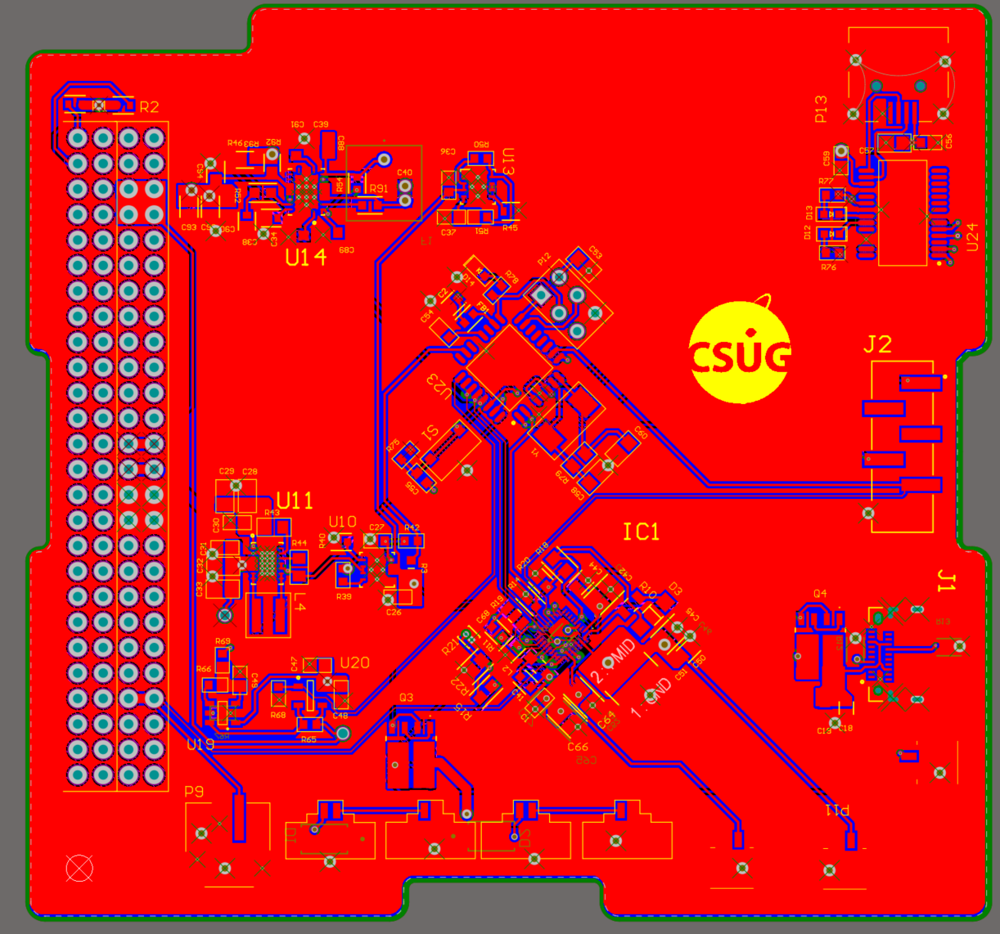
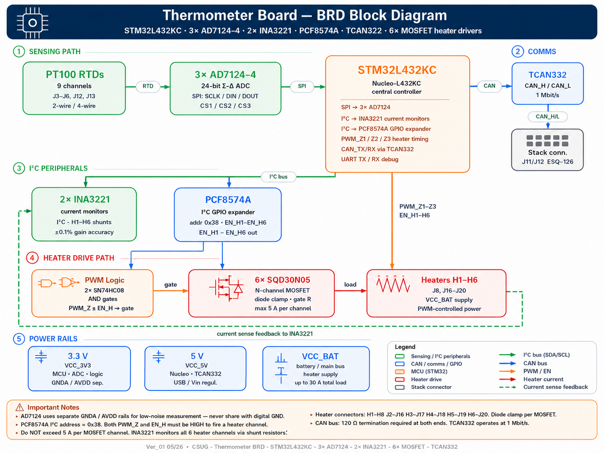
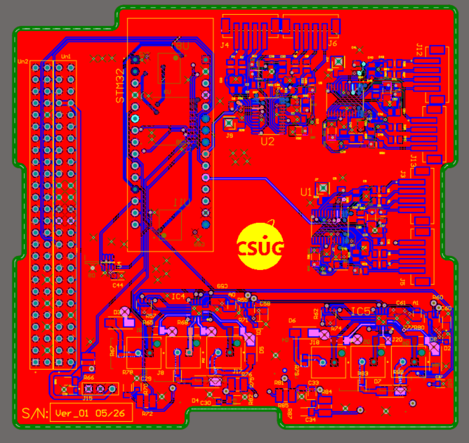

Autonomous solar power
A flight-like node must run on harvested energy and a battery — not a lab bench supply that hides the real charger behaviour.
An end-to-end CubeSat ground platform — from harvested solar energy to wireless telemetry on a GUI.
CubeSats need their power and data subsystems validated together — on a bench, before flight.
A flight-like node must run on harvested energy and a battery — not a lab bench supply that hides the real charger behaviour.
Power, sensing, firmware and radio are usually built separately. Faults appear only when they finally meet. This platform forces them to meet early.
LoRa carries measurements over long range at low power — the right fit for a remote, energy-constrained sensing node.
Every stage is observable: solar voltage, regulated rails, UART frames, and the LoRa payload at four separate points.
The two flows are coupled: a LoRa transmit burst is a data event, but it also lands on the EPS as a momentary load — which is why the power budget and the comms test plan are treated together, never as separate topics.
Most CubeSat subsystems are built and tested in isolation. This platform is deliberately the opposite — that is its contribution.
Solar → power → sensing → MCU → RF → GUI is built and bench-validated as one platform — so integration faults surface here, not in flight.
The same payload is verified at four independent checkpoints; readable UART / LoRa frames make every hop debuggable instead of a black box.
A single BQ25798 replaces distributed per-panel chargers — solar + USB-C + battery + system bus + built-in MPPT. Fewer parts, fewer failure points, simpler routing.
Remaining tasks — AD7124 firmware alignment and real solar I–V measurement — are flagged on the slides, not hidden.

P1 = power → EPS · P2 = sun-vector → OBC
Power and sun-sensor signals are kept on separate connectors so the high-current path can be validated independently. The per-board 2.35 V / 1.5 A is a design label to be measured; the array target is reached by the 2S2P configuration.

The same design as a manufactured board (left) and a rotatable 3D model (right) — used to check cell placement, connector orientation, and how the board stacks in the assembly.

The charger sits between four sources and loads: solar in, USB-C in, battery, and the system bus that powers the rest of the platform.

The EPS as a manufactured board (left) and a rotatable 3D model (right). Everything from the power diagram lives here: the single BQ25798 charger at the centre, the two protected inputs on the edges, and the 3.3 V / 5 V rail regulators — with the PC-104 header along one edge that lets this board stack under the THC payload.

Heater ON = Enable ∧ PWM
A channel fires only when both an enable command and a PWM command are high — no accidental heating on reset/boot. Final RTD front-end: AD7124 on the board; MAX31865-style in the firmware PoC (alignment to be confirmed).

A dense mixed-signal board: delicate RTD sensing and current monitors sit alongside six high-current heater drivers — the 3D view (right) is how I verify connector access and component clearance before assembly.
The two boards aren't standalone — they bolt together into one CubeSat-format stack. EPS on the bottom pushes regulated power up through the PC-104 header; THC on top draws that power and returns telemetry down the same connector. The 3D view is built from both real board models, so the whole mated assembly rotates.
RT = R0 (1 + A·T + B·T²)
PT100 resistance solved for temperature, then validated against a known resistor before live heating.
868 MHz — EU863-870 bench configuration.
SF7 — low-latency, short-range bench link.
Raw LoRa for proof-of-concept — not LoRaWAN yet.
Frequency, bandwidth, SF, coding rate & sync word.
The Heltec prints the received STM32 line to its serial monitor before transmitting — so the UART hand-off can be confirmed independently of the RF link.
The video shows the chain running for real; the dashboard mirrors it — parsing fields and preserving the raw received line so every value can be checked against the original payload. Temperature is live today; the greyed fields (battery, solar, heater current) are the planned payload expansion.
Integration follows one rule: each stage must produce a measurable output before the next is connected.
A telemetry frame is only valid when the identical payload appears at all four observation points.
T1:25.75,T2:0.00
Sensor + firmware OK
T1:25.75,T2:0.00
UART hand-off OK
T1:25.75,T2:0.00
RF link OK
T1:25.75,T2:0.00
Parser OK
Risk of cross-wiring solar and USB-C. Fix: labelled harnesses + continuity checks before power.
No frame at the Heltec. Fix: common ground, crossed TX/RX, confirmed 115200 baud.
Mismatched radio settings. Fix: match frequency, bandwidth, SF, coding rate & sync word on both ends.
A recurring theme: the firmware temperature driver (MAX31865-style proof-of-concept) must still be aligned to the final AD7124 front-end — flagged honestly as remaining work, not hidden.
A single coherent chain: harvested solar energy is conditioned, drives the sensing payload, and the measured values travel wirelessly to a display — exactly the integration this internship set out to prove.